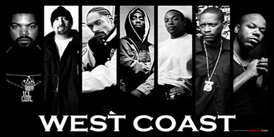

Calle, dinero y mujeres: Lo que todos creen del Gangsta Rap
Hubo un tiempo en que el hip hop se encontraba desligado de la maquinaria comercial para erigirse como un arte musical reaccionario que representaba a los marginados, protestaba contra la opresión del sistema, le daba una clara voz a las comunidades afroamericanas y a su vez era asociada con la delincuencia de los barrios o zonas populares. Fue justo en ese tiempo, a mediados de la década de 1980, cuando el gansta rap no solo estaba escribiendo la historia del hip hop sino también participando activamente para oponerse en contra del malestar de una cultura racista, prejuiciosa y explotadora. Durante el nacimiento de este estilo gran parte de los artistas del gangsta rap mantenían asociaciones delictivas con pandillas y grupos de delincuencia juvenil que a diario batallaban contra la policía local, la cual mantenía una filosofía violenta y sesgada de disparar primero antes de preguntar. Reducir al gangsta rap como una celebración del delito entre estas minorías es completamente injusto actualmente, pero así fueron vistos en aquel tiempo, aunque se trataba de algo mucho más grande: el surgimiento de una voz que no se dejaba callar para cantar los abusos que el mundo prefería no escuchar.
La acción nos traslada a la ciudad de Compton, lugar de origen de los protagonistas, los miembros del pionero grupo de gangsta rap, o reality rap como ellos mismos autodenominaban su música, N.W.A (Niggas With Attitude), compuesto por: Eazy- E, Ice Cube, Dr.Dre, DJ Yella y MC Ren. Y el epicentro de su debut con su tema “Straight Outta Compton”, donde nos mostraron las relaciones entre ellos tal y como fueron, con sus idas y venidas, sus enfrentamientos y sus momentos de apoyo.
El segundo punto clímax viene acompañado de la aparición de Tupac y Snoop Dogg en el estudio de Dre. Con una caracterización perfecta por parte de los actores y el vestuario que no nos hace dudar ni un instante de a quién estamos viendo en pantalla.